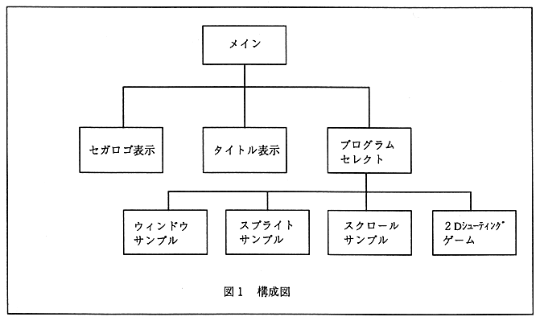

Return to previous page ｜ Return to menu ｜ Go to next page
-
2. Overview
- This sample program is in the SEGAGAME directory. The sample program has the structure shown in Fig. 1. This is classified and explained as follows.
-
Game sequence
- Main, Sega logo display, title display, and program select in Figure 1. These are common to most games.
-
Basic function program
- Sprite sample and scroll sample in Figure 1. These are basic programs that use the functions of this game machine individually.
-
Action control
- The 2D shooting game and game demo in Figure 1. Here is how to make an action game. An action is a program that expresses movements such as a player (own aircraft), enemy (enemy aircraft), collision check (collision detection), and background scrolling. The action control program manages these actions.

Figure 1 Configuration diagram
Return to previous page ｜ Return to menu ｜ Go to next page